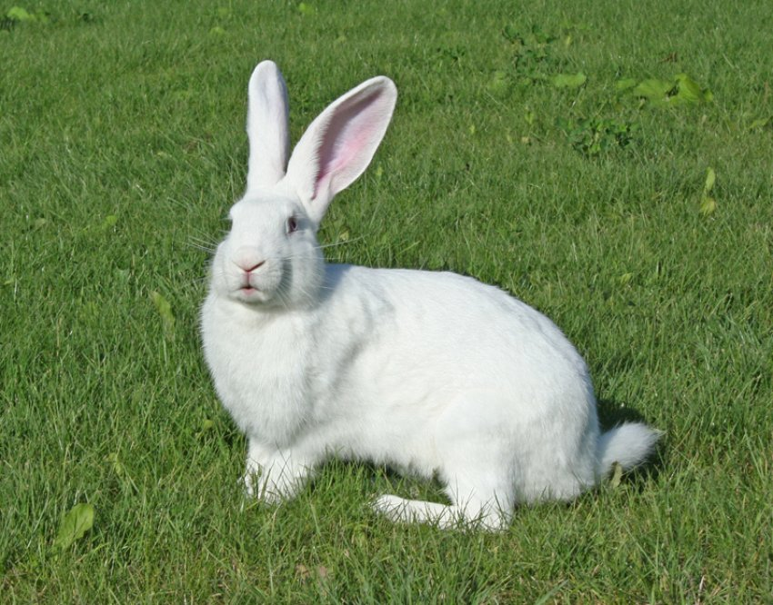
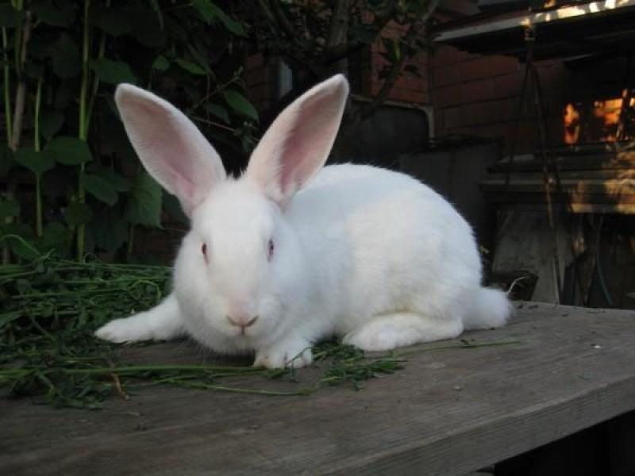
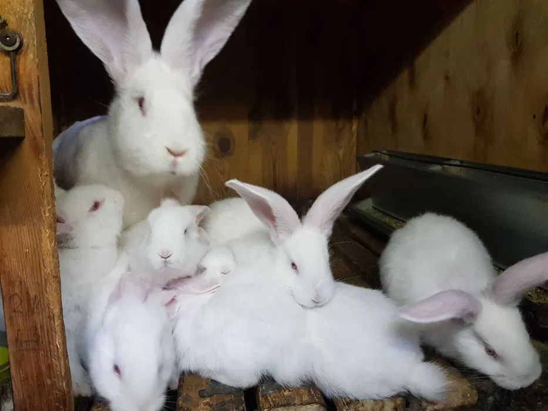
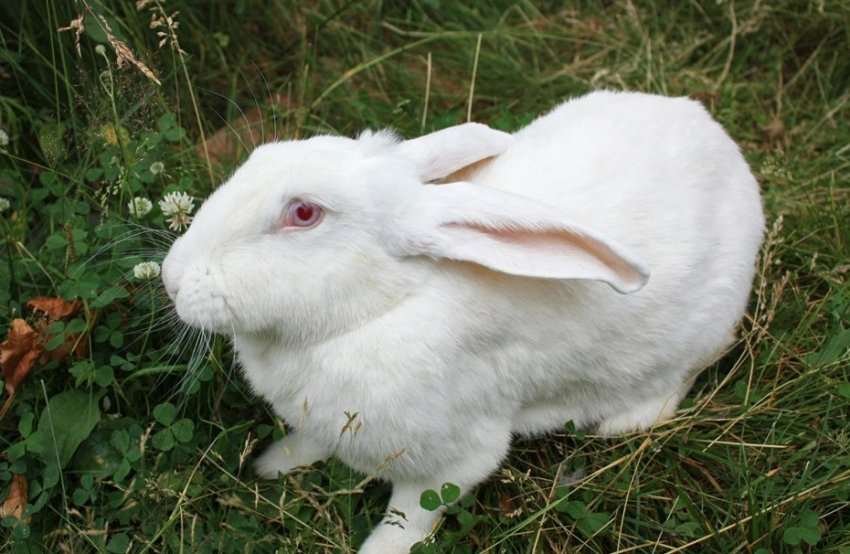
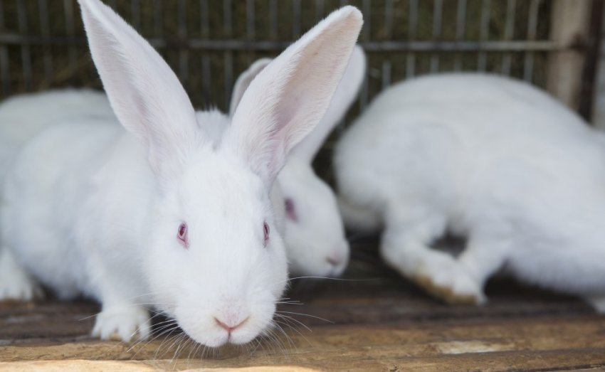
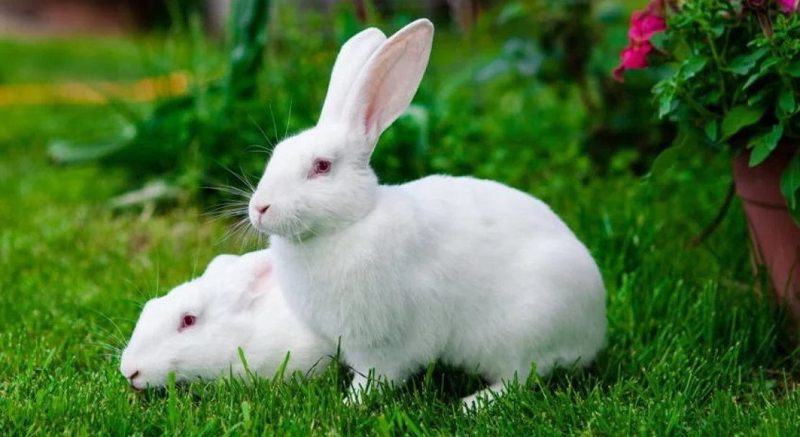
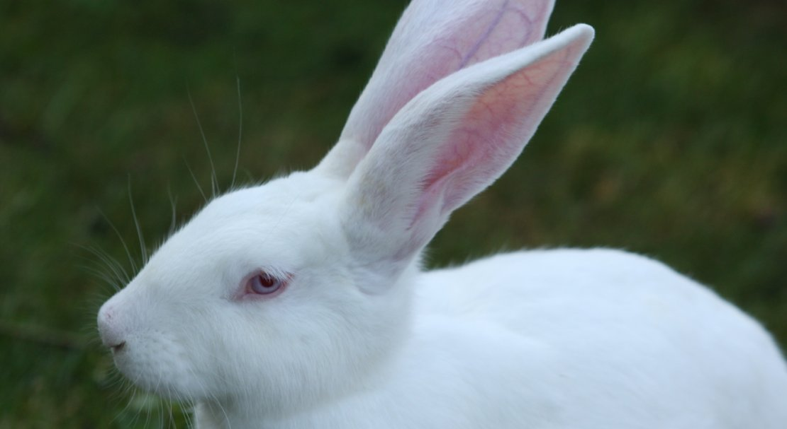
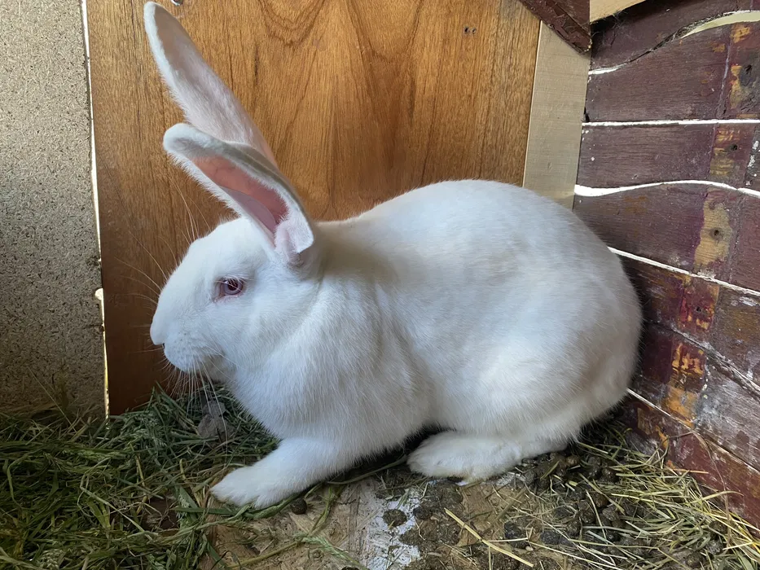

М'ясо-шкуркова порода
Бельгійська порода з XIX століття. Альбінос-гігант для ферми та господарства.
Дізнатися більше
Білий Велетень — одна з найвідоміших м'ясо-шкуркових порід кроликів у світі. Виведена у XIX столітті в Бельгії та Німеччині шляхом тривалої селекції кролів-альбіносів з породи Фландр. Мета селекціонерів — закріпити ознаки м'ясності, ніжної конституції та підвищеної скоростиглості.
В Україну порода завезена у 1927–1928 роках з Німеччини. Для подальшого вдосконалення застосовували прилиття крові шиншили та сірого велетня з наступною селекцією за міцною конституцією, широкогрудістю, плодючістю та витривалістю.
Порода пристосована до розведення в усіх кліматичних зонах, невибаглива до умов утримання та відрізняється спокійною вдачею. Молодняк швидко росте, а самки є відмінними матерями з добрим молоком.

Невелика, акуратна, пропорційна до тіла. Вуха прямостоячі, добре розвинені, довжиною 15–18 см. Очі — яскраво-червоні: це обов'язкова ознака альбінізму, зумовлена відсутністю пігменту меланіну. Через прозорість райдужки видно кровоносні судини ока.
Довжина — не менше 60–65 см. Конституція лептосомна (видовжена) з відносно короткими лапами. Спина пряма, широка. Круп округлий. Груди глибокі, обхват — не менше 37 см, з добре вираженим підгруддям.
Лапи міцні, поставлені широко. Важливим дефектом вважається клишоногість або Х-подібний постав передніх лап — таких особин до розплідника не допускають.
Забарвлення виключно біле, без жодного кольорового вкраплення чи жовтуватого відтінку. Шерсть щільна, пружна, рівномірна. Ця бездоганна білизна — головна господарська цінність хутра: воно легко і рівномірно фарбується в будь-який колір без ризику розбіжності відтінків між шкурами.
Дорослі особини важать 5–6 кг. Добре відгодовані самці на виставках досягають 7 кг. Молодняк: у 2 місяці — до 1,5–1,8 кг, у 3 місяці — 2 кг, у 4 місяці — близько 2,5 кг.
Спокійний, флегматичний. Тварини невибагливі, добре переносять людський контакт. Агресивність не властива. Це полегшує обслуговування поголів'я та знижує стрес під час ветеринарних маніпуляцій.
Через великі розміри тіла Білий Велетень потребує просторих кліток і продуманої організації простору. Тісне утримання — пряма причина хвороб кінцівок та ожиріння.
Мінімальні розміри для дорослої особини: 100 × 70 × 60 см (довжина × ширина × висота). Для кролиці з гніздом — не менше 130 × 70 × 60 см. Підлога — сітчаста або рейкова з обов'язковими суцільними вставками для відпочинку лап: пасивна постійна навантаженість сіткою призводить до пододерматиту.
Оптимальна температура: +10…+20 °C. Тварини добре переносять мороз, але критично бояться протягів і різких перепадів температур. Влітку небезпечний тепловий удар: при +30 °C і вище кролики гинуть. Приміщення обов'язково провітрюють, уникаючи прямих потоків холодного повітря. Взимку відкриті частини кліток завішують мішковиною.
Тривалість світлового дня — 16–18 год. Нестача світла гальмує статеве дозрівання та знижує плодючість самок. Кліматичне устаткування (вентилятори, козирки) особливо важливе в літній період.
Поширений варіант — тирса або солома з регулярною заміною. Щоб хутро залишалося білосніжним, прибирання клітки проводять щодня. Годівниці та поїлки миють не рідше ніж через день. Дезінфекцію клітки — щонайменше двічі на рік, або після кожного окролу.
За 4–5 днів до окролу в клітку самки поміщають маточник розміром близько 40 × 25 × 30 см із знімною кришкою зверху — для зручного огляду гнізда. Маточник утеплюють м'якою підстилкою; у холодну пору року його додатково ізолюють або підігрівають.
Годівниці та поїлки кріплять на невеликій висоті від підлоги, але із зазором — щоб кролики не влаштовували лежанки в зоні їжі. Оптимальний варіант — ніпельні автоматичні поїлки: вони зменшують забруднення води і полегшують обслуговування.
Раціон Білого Велетня — збалансований за клітковиною, протеїном, вітамінами та мінералами. Перегодовування веде до ожиріння та зниження статевої активності.

Білий Велетень — скоростигла порода, однак відрізняється дещо повільнішим набором маси порівняно з сучасними бройлерними кросами. Самки дозрівають до спаровування у 5–6 місяців, самці — у 6–7 місяців. Передчасне зведення послаблює конституцію та знижує плодючість.
Кролиця приносить 7–14 кроленят за один окріл. Лактація триває 28–35 днів; відсадження молодняку — у 28–42 дні залежно від стану самки. Після відсадження самку можна знову звести з самцем.
До розплідника допускають особин з яскраво вираженими ознаками породи: бездоганно білим хутром, масою не менше 4,5 кг, правильним поставом кінцівок, широкими грудьми. Самців і самок із вузькими грудьми, клишоногістю або гірбатою спиною вибраковують безумовно. Неправильний підбір пар призводить до поступового виродження породи.
Самку підсаджують у клітку до самця (не навпаки — самець в чужому середовищі часто відволікається). Контрольне парування проводять через 5–6 днів. Ознака успішного запліднення — відмова самки від повторного контакту з самцем. Тривалість сукрольності — 28–32 дні.
За 4–5 днів до передбачуваного окролу клітку ретельно дезінфікують і встановлюють маточник. Самка самостійно готує гніздо з підстилки та пуху, вищипаного з власного черева. Не варто заважати цьому процесу.
Окріл, як правило, відбувається вночі і триває 20–40 хвилин. Мертвонароджених і кроленят із явними дефектами прибирають одразу. Самка годує молодняк 1 раз на добу — вночі. Кроленята народжуються сліпими і голими; очі відкриваються на 10–12-й день; хутро з'являється на 7–10-й день.
Молодняк відсаджують від матері у 28–42 дні. Перший тиждень після відлучення — найстресовіший: раціон підтримують без різких змін, стежать за консистенцією калу. Забій на м'ясо зазвичай проводять у 90–120 днів при досягненні маси 2,5–3 кг.
Для підвищення скоростиглості та м'ясності Білого Велетня схрещують з Каліфорнійською або Новозеландською білою породою. Помісний молодняк першого покоління (F1) дає кращий приріст, ніж чистопородний. Для промислових ферм це поширена практика.
Порода відносно витривала, проте схильна до кількох характерних захворювань, пов'язаних з великою масою тіла та особливостями конституції.
Запалення підошв лап через постійний контакт зі жорсткою сіткою. Ознаки: почервоніння, облисіння та виразки на лапах. Профілактика — дерев'яні рейки або гумові килимки в клітці; підтримання сухості підлоги.
Запалення молочної залози у самок — особливо поширене у Білого Велетня через великі розміри тіла та зміщений центр ваги. Причини: мікротравми, переохолодження, надмірне молоко за відсутності кроленят. Профілактика — гладке підлогове покриття, відсутність гострих країв у клітці.
Вірусна геморагічна хвороба кроликів (ВГХК) і міксоматоз — найнебезпечніші інфекції, що косять поголів'я протягом кількох днів. Єдиний надійний захист — обов'язкова щорічна вакцинація. Перше щеплення — у 45 днів, ревакцинація — кожні 6–12 місяців.
Паразитарне захворювання кишківника, особливо небезпечне для молодняку до 4 місяців. Проявляється проносом, здуттям, виснаженням. Профілактика — суворе дотримання гігієни клітки, роздільне утримання молодняку і дорослих, застосування кокцидіостатиків за призначенням ветеринара.
Через особливості прикусу та обмін речовин різці можуть надмірно відростати. Кролики мають постійно гризти тверді корми або гілки для природного зношення зубів. При помітному викривленні або надмірному зрості різців — консультація ветеринара.
Щорічна вакцинація проти ВГХК і міксоматозу — обов'язкова. Профілактична дегельмінтизація — двічі на рік. Огляд кожної особини раз на тиждень: стан шерсті, очей, носа, лап. Карантин 2–3 тижні для нових тварин перед введенням у основне стадо.

Дорослий самець
Кролиця з молодняком
Кроленята
Структура хутра
Кліткове утримання на фермі